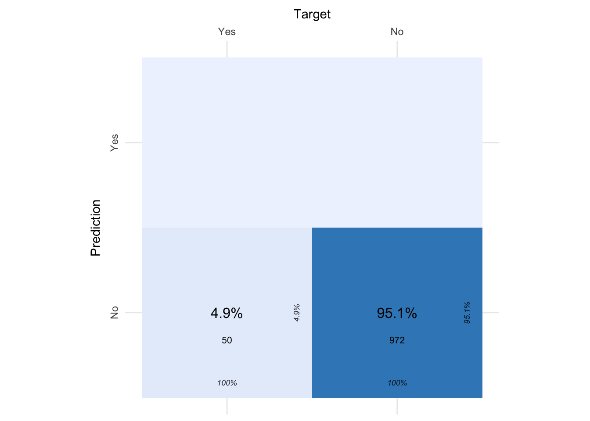
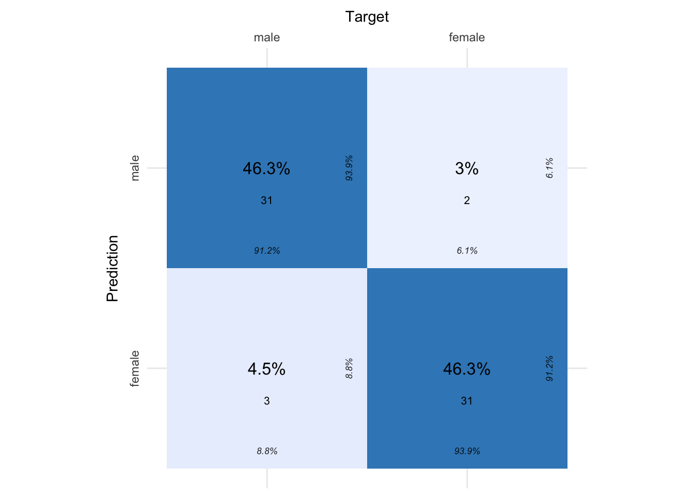

# Paquetes anteriores
library(tidyverse)
library(sjPlot)
library(knitr) # para formatos de tablas
library(skimr)
library(DataExplorer)
library(GGally)
library(gridExtra)
library(ggpubr)
library(cvms)
library(kknn)
theme_set(theme_sjplot2())
# Paquetes AA
library(mlr3verse)
library(mlr3tuning)
library(mlr3tuningspaces)11 Máquinas de Vector Soporte (SVM)
Las Máquinas de Vector Soporte (Support Vector Machines, SVMs) es un algoritmo de clasificación y regresión desarrollado en la década de los 90. Aunque inicialmente se desarrolló como un método de clasificación binaria, su aplicación se ha extendido a problemas de clasificación múltiple y regresión. SVMs ha resultado ser uno de los mejores clasificadores para un amplio abanico de situaciones, por lo que se considera uno de los referentes dentro del ámbito del aprendizaje automático.
Las Máquinas de Vector Soporte se fundamentan en los clasificadores marginales maximales que se obtienen a partir del concepto matemático de hiperplano. Por ese motivo, para comprender el funcionamiento de los SVM se requieren conocimientos más profundos de álgebra lineal y optimización de los utilizados hasta ahora. En este tema no estamos interesados en los aspectos formales más matemáticos y por ello se recomienda el libro Support Vector Machines Succinctly by Alexandre Kowalczyk para indagar más.
Para entender mejor el funcionamiento de este algoritmo utilizaremos como ejemplos principales aquellos dedicados a tareas de clasificación.
11.1 Clasificadores de vector soporte
En un espacio p-dimensional, un hiperplano se define como un subespacio plano y afín de dimensiones \(𝑝−1\) . El término afín significa que el subespacio no tiene por qué pasar por el origen. En un espacio de dos dimensiones, el hiperplano es un subespacio de una dimensión, es decir, una recta. En un espacio tridimensional, un hiperplano es un subespacio de dos dimensiones, un plano convencional. Para dimensiones \(𝑝>3\) no es intuitivo visualizar un hiperplano, pero el concepto de subespacio con \(𝑝−1\) dimensiones se mantiene.
Para mostrar el uso de los hiperplanos tomamos un ejemplo muy sencillo de un problema de clasificación con dos clases en dos dimensiones cuyos puntos vienen dados por:

11.1.1 Casos separables linealmente
Si la distribución de las observaciones es tal que se pueden separar linealmente de forma perfecta en las dos clases, entonces, la definición matemática de un hiperplano es bastante simple. En el caso de dos dimensiones, el hiperplano se describe acorde a la ecuación de una recta:
\[\beta_0+\beta_1𝑥_1+\beta_2𝑥_2=0\]
Dados los parámetros \(\beta_0\) , \(\beta_1\) y \(\beta_2\), todos los pares de valores \(𝐱=(𝑥_1,𝑥_2)\) para los que se cumple la igualdad son puntos del hiperplano. Esta ecuación puede generalizarse para p-dimensiones:
\[\beta_0+\beta_1𝑥_1+\beta_2𝑥_2 +...+\beta_px_p=0\]
y de igual manera, todos los puntos definidos por el vector \((𝐱=𝑥_1,𝑥_2,...,𝑥_𝑝)\) que cumplen la ecuación pertenecen al hiperplano.
Cuando \(𝐱\) no satisface la ecuación:
\[\beta_0+\beta_1𝑥_1+\beta_2𝑥_2 +...+\beta_px_p < 0\]
o bien
\[\beta_0+\beta_1𝑥_1+\beta_2𝑥_2 +...+\beta_px_p > 0\]
el punto \(𝐱\) cae a un lado o al otro del hiperplano. Así pues, se puede entender que un hiperplano divide un espacio p-dimensional en dos mitades. Para saber en qué lado del hiperplano se encuentra un determinado punto \(𝐱\), solo hay que calcular el signo de la ecuación.
La definición de hiperplano para casos perfectamente separables linealmente resulta en un número infinito de posibles hiperplanos, lo que hace necesario un método que permita seleccionar uno de ellos como clasificador óptimo. En este problema podemos considerar diferentes hiperplanos (en este caso rectas) que nos permiten clasificar la muestra de datos de forma adecuada como podemos ver en el gráfico siguiente:

Tenemos tres rectas y posibles soluciones al problema planteado. La solución a este problema consiste en seleccionar como clasificador óptimo el hiperplano que se encuentra más alejado de todas las observaciones de entrenamiento. A este se le conoce como maximal margin hyperplane o hiperplano óptimo de separación. Para identificarlo, se tiene que calcular la distancia perpendicular de cada observación a un determinado hiperplano. La menor de estas distancias (conocida como margen) determina cuán alejado está el hiperplano de las observaciones de entrenamiento. Así pues, el maximal margin hyperplane se define como el hiperplano que consigue un mayor margen, es decir, que la distancia mínima entre el hiperplano y las observaciones es lo más grande posible. Aunque esta idea suena razonable, no es posible aplicarla, ya que habría infinitos hiperplanos contra los que medir las distancias. En la imagen siguiente se muestra la solución gráfica del algoritmo SVM para este problema:

La imagen anterior muestra el maximal margin hyperplane, formado por el hiperplano (línea negra continua y su margen, las dos líneas discontinuas). Las tres observaciones equidistantes respecto al maximal margin hyperplane que se encuentran a lo largo de las líneas discontinuas se les conoce como vectores de soporte, ya que son vectores en un espacio p-dimensional y soportan (definen) el maximal margin hyperplane. Cualquier modificación en estas observaciones (vectores soporte) conlleva cambios en el maximal margin hyperplane. Sin embargo, modificaciones en observaciones que no son vector soporte no tienen impacto alguno en el hiperplano.
11.1.2 Casos no separables linealmente
El maximal margin hyperplane descrito en el apartado anterior es una forma muy simple y natural de clasificación siempre y cuando exista un hiperplano de separación. En la gran mayoría de casos reales, los datos no se pueden separar linealmente de forma perfecta, por lo que no existe un hiperplano de separación y no puede obtenerse un maximal margin hyperplane. Para el siguiente ejemplo se emplea un set de datos publicado en el libro Elements of Statistical Learning que contiene observaciones simuladas con una función no lineal en un espacio de dos dimensiones (2 predictores). El objetivo es entrenar un modelo SVM capaz de clasificar las observaciones.
 Para solucionar estas situaciones, se puede extender el concepto de maximal margin hyperplane para obtener un hiperplano que “casi” separe las clases, pero permitiendo que se cometan unos pocos errores. A este tipo de hiperplano se le conoce como Support Vector Classifier o Soft Margin.
Para solucionar estas situaciones, se puede extender el concepto de maximal margin hyperplane para obtener un hiperplano que “casi” separe las clases, pero permitiendo que se cometan unos pocos errores. A este tipo de hiperplano se le conoce como Support Vector Classifier o Soft Margin.
11.1.3 Soft margin SVM
El Maximal Margin Classifier descrito en la sección anterior tiene poca aplicación práctica, ya que rara vez se encuentran casos en los que las clases sean perfecta y linealmente separables. De hecho, incluso cumpliéndose estas condiciones ideales, en las que exista un hiperplano capaz de separar perfectamente las observaciones en dos clases, esta aproximación sigue presentando dos inconvenientes:
Dado que el hiperplano tiene que separar perfectamente las observaciones, es muy sensible a variaciones en los datos. Incluir una nueva observación puede suponer cambios muy grandes en el hiperplano de separación (poca robustez).
Que el maximal margin hyperplane se ajuste perfectamente a las observaciones de entrenamiento para separarlas todas correctamente suele conllevar problemas de overfitting.
Por estas razones, es preferible crear un clasificador basado en un hiperplano que, aunque no separe perfectamente las dos clases, sea más robusto y tenga mayor capacidad predictiva al aplicarlo a nuevas observaciones (menos problemas de overfitting). Esto es exactamente lo que consiguen los clasificadores de vector soporte, también conocidos como soft margin classifiers o Support Vector Classifiers. Para lograrlo, en lugar de buscar el margen de clasificación más ancho posible que consigue que las observaciones estén en el lado correcto del margen; se permite que ciertas observaciones estén en el lado incorrecto del margen o incluso del hiperplano.
La identificación del hiperplano que clasifique correctamente la mayoría de las observaciones a excepción de unas pocas, es un problema de optimización convexa. Si bien la demostración matemática queda fuera del objetivo de esta introducción, es importante mencionar que el proceso incluye un hiperparámetro llamado 𝐶. 𝐶 controla el número y severidad de las violaciones del margen (y del hiperplano) que se toleran en el proceso de ajuste. Si 𝐶=∞ , no se permite ninguna violación del margen y por lo tanto, el resultado es equivalente al Maximal Margin Classifier (teniendo en cuenta que esta solución solo es posible si las clases son perfectamente separables). Cuando más se aproxima 𝐶 a cero, menos se penalizan los errores y más observaciones pueden estar en el lado incorrecto del margen o incluso del hiperplano. 𝐶 es, a fin de cuentas, el hiperparámetro encargado de controlar el balance entre sesgo y varianza del modelo. En la práctica, su valor óptimo se identifica mediante validación cruzada.
El proceso de optimización tiene la peculiaridad de que solo las observaciones que se encuentran justo en el margen o que lo violan influyen sobre el hiperplano. A estas observaciones se les conoce como vectores soporte y son las que definen el clasificador obtenido. Esta es la razón por la que el parámetro 𝐶 controla el balance entre sesgo y varianza. Cuando el valor de 𝐶 es pequeño, el margen es más ancho, y más observaciones violan el margen, convirtiéndose en vectores soporte. El hiperplano está, por lo tanto, sustentado por más observaciones, lo que aumenta el sesgo pero reduce la varianza. Cuando mayor es el valor de 𝐶, menor el margen, menos observaciones son vectores soporte y el clasificador resultante tiene menor sesgo pero mayor varianza.
Otra propiedad importante que deriva de que el hiperplano dependa únicamente de una pequeña proporción de observaciones (vectores soporte), es su robustez frente a observaciones muy alejadas del hiperplano.
11.1.4 Límites de separación no lineales
El Support Vector Classifier descrito en el apartado anterior consigue buenos resultados cuando el límite de separación entre clases es aproximadamente lineal. Si no lo es, su capacidad decae drásticamente. Una estrategia para enfrentarse a escenarios en los que la separación de los grupos es de tipo no lineal consiste en expandir las dimensiones del espacio original.
El hecho de que los grupos no sean linealmente separables en el espacio original no significa que no lo sean en un espacio de mayores dimensiones. Las imágenes siguientes muestran dos grupos cuya separación en dos dimensiones no es lineal, pero sí lo es al añadir una tercera dimensión.

El método de Máquinas Vector Soporte (SVM) se puede considerar como una extensión del Support Vector Classifier obtenida al aumentar la dimensión de los datos. Los límites de separación lineales generados en el espacio aumentado se convierten en límites de separación no lineales al proyectarlos en el espacio original. Este algoritmo se estudiará con detalle en el cuaderno siguiente, ya que por el momento nos centramos en la aplicación del Support Vector Classifier en problemas de clasificación y regresión.
11.2 Máquinas de vector soporte
Como hemos visto en la última imagen es necesario expandir las dimensiones del problema en cuestión para poder obtener clasificadores basados en hiperplanos lineales. A continuación, estudiamos los aspectos teóricos correspondientes a las máquinas de vector de soporte en este tipo de situaciones.
La pregunta que nos queda por responder es ¿cómo aumentamos la dimensión del espacio y cual es la dimensión correcta que debemos utilizar? La dimensión de un conjunto de datos puede transformarse combinando o modificando cualquiera de sus dimensiones. Por ejemplo, se puede transformar un espacio de dos dimensiones en uno de tres aplicando la siguiente función:
\[𝑓(𝑥_1,𝑥_2)=(𝑥_1^2,2\sqrt{x_1 x_2},𝑥_2^2)\]
Esta es solo una de las infinitas transformaciones posibles, ¿cómo saber cuál es la adecuada? Es aquí donde el concepto de kernel entra en juego. Un kernel (K) es una función que devuelve el resultado del producto escalar entre dos vectores realizado en un nuevo espacio dimensional distinto al espacio original en el que se encuentran los vectores. Aunque no se ha entrado en detalle en las fórmulas matemáticas empleadas para resolver el problema de optimización, esta contiene un producto escalar. Si se sustituye este producto escalar por un kernel, se obtienen directamente los vectores soporte (y el hiperplano) en la dimensión correspondiente al kernel. A esto se le suele conocer como kernel trick porque, con solo una ligera modificación del problema original, se puede obtener el resultado para cualquier dimensión. A continuación se muestran los más utilizados. De ahora en adelante:
\[<x_i, x_j> = x_i^t x_j\]
representa el producto escalar entre \(x_i\) y \(x_j\).
11.2.1 Kernel lineal
El kernel viene definido por la expresión:
\[k(x_i, x_j) = x^t_i x_j,\]
que es simplemente el producto escalar del vector de características. Si se emplea un Kernel lineal, el clasificador que obtenemos es idéntico al que obteníamos en el cuaderno anterior sin el aumento de dimensiones.
11.2.2 Kernel polinómico
El kernel viene definido por la expresión:
\[k(x_i, x_j) = (\gamma x^t_i x_j + \tau)^d.\]
Cuando se emplea \(𝑑=1\) y \(\tau = 0\), el resultado es el mismo que el de un kernel lineal. Si \(𝑑>1\) , se generan límites de decisión no lineales, aumentando la no linealidad a medida que aumenta \(𝑑\). No suele ser recomendable emplear valores de \(𝑑\) mayores a 5 por problemas de sobreajuste. El valor de \(\gamma\) controla el comportamiento del kernel.
11.2.3 Kernel Gaussiano (RBF)
El kernel viene definido por la expresión:
\[k(x_i, x_j) = exp(-\gamma||x-x^t||^2), \quad \gamma >0.\]
El valor de \(\gamma\) controla el comportamiento del kernel, cuando es muy pequeño, el modelo final es equivalente al obtenido con un kernel lineal. A medida que aumenta su valor, también lo hace la flexibilidad del modelo.
11.2.4 Kernel sigmoidal
El kernel viene definido por la expresión:
\[k(x_i, x_j) = tanh(\gamma x^t_i x_j + \tau).\]
Los kernels descritos son solo unos pocos de los muchos que existen. Cada uno tiene una serie de hiperparámetros cuyo valor óptimo puede encontrarse mediante validación cruzada. No puede decirse que haya un kernel que supere al resto, depende en gran medida de la naturaleza del problema que se esté tratando. Ahora bien, tal como indican los autores de A Practical Guide to Support Vector Classification, es muy recomendable probar el kernel RBF. Este kernel tiene dos ventajas: que solo tiene dos hiperparámetros que optimizar (𝛾y la penalización 𝐶 común a todos los SVM) y que su flexibilidad puede ir desde un clasificador lineal a uno muy complejo.
11.2.5 SVM en problemas de regresión
Las máquinas de vectores soporte (SVM) son bien conocidas en problemas de clasificación. Sin embargo, el uso de SVM en regresión no está tan bien documentado. Este tipo de modelos se conoce como regresión de vectores de soporte (SVR).
En la mayoría de los modelos de regresión lineal, el objetivo es minimizar la suma de errores al cuadrado. Tomemos como ejemplo los mínimos cuadrados ordinarios (MCO). La función objetivo para MCO con un predictor (característica) es la siguiente:
\[\underset{\beta}{min} \sum_{i=1}^n (y_i-\beta x_i)^2.\]
Lasso, Ridge y ElasticNet son extensiones de esta sencilla ecuación, con un parámetro de penalización adicional que pretende minimizar la complejidad y/o reducir el número de características utilizadas en el modelo final. En cualquier caso, el objetivo -como ocurre con muchos modelos- es reducir el error del conjunto de pruebas.
Sin embargo, ¿qué ocurre si sólo nos preocupa reducir el error hasta cierto punto? ¿Y si no nos importa lo grandes que sean nuestros errores, siempre que estén dentro de un rango aceptable?
SVR nos da la flexibilidad de definir cuánto error es aceptable en nuestro modelo y encontrar una línea adecuada (o hiperplano en dimensiones superiores) para ajustarse a los datos.
En contraste con OLS, la función objetivo de SVR se encarga de minimizar los coeficientes - más específicamente, la norma l2 del vector de coeficientes - no el error al cuadrado. El término de error se maneja en las restricciones, donde se establece el error absoluto menor o igual a un margen especificado, llamado el error máximo, \(\epsilon\). Podemos ajustar epsilon para obtener la precisión deseada de nuestro modelo. Nuestra nueva función objetivo y las restricciones son las siguientes:
\[\text{Función: }\underset{\beta}{min} \quad \frac{1}{2} ||\mathbf{\beta}||^2 \]
\[\text{Restricción: } |y_i-\beta x_i| \leq \epsilon\]  Este algoritmo no está exento de problemas ya que aunque se resuelve la función objetivo algunos de los puntos siguen quedando fuera de los márgenes establecidos. Como tal, tenemos que tener en cuenta la posibilidad de errores que sean mayores que \(\epsilon\). Esto se hace introduciendo variables de holgura.
Este algoritmo no está exento de problemas ya que aunque se resuelve la función objetivo algunos de los puntos siguen quedando fuera de los márgenes establecidos. Como tal, tenemos que tener en cuenta la posibilidad de errores que sean mayores que \(\epsilon\). Esto se hace introduciendo variables de holgura.
El concepto de variables de holgura es sencillo: para cualquier valor que quede fuera de \(\epsilon\), podemos denotar su desviación del margen como \(\xi\). Sabemos que estas desviaciones pueden existir, pero aun así nos gustaría minimizarlas en la medida de lo posible. Por lo tanto, podemos añadir estas desviaciones a la función objetivo:
\[\text{Función: }\underset{\beta}{min} \quad \frac{1}{2} ||\mathbf{\beta}||^2 + C \sum_{i=1}^n |\xi|\]
\[\text{Restricción: } |y_i-\beta x_i| \leq \epsilon + |\xi|\]  Ahora tenemos un hiperparámetro adicional, C, que podemos ajustar. A medida que C aumenta, nuestra tolerancia para los puntos fuera de ϵ también aumenta. A medida que C se acerca a 0, la tolerancia se aproxima a 0 y la ecuación colapsa en la simplificada (aunque a veces inviable).
Ahora tenemos un hiperparámetro adicional, C, que podemos ajustar. A medida que C aumenta, nuestra tolerancia para los puntos fuera de ϵ también aumenta. A medida que C se acerca a 0, la tolerancia se aproxima a 0 y la ecuación colapsa en la simplificada (aunque a veces inviable).
Antes de comenzar con la implementación de las SVM en mlr3 vamos a cargar las librarías necesarias:
11.3 Máquinas de vector soporte en mlr3
Para implementar las máquinas de vector soporte en el paquete mlr3 disponemos de dos funciones:
regr.svmpara tareas de regresión.classif.svmpara tareas de clasificación
que utilizan como base las funciones definidas en la librería e1071.
Podemos cargar los algoritmos con el código siguiente:
En este caso los hiperparámetros de ambos algoritmos no son los mismos aunque coinciden en la mayoría. A continuación se muestran todos ellos:
[1] "cachesize" "class.weights" "coef0" "cost"
[5] "cross" "decision.values" "degree" "epsilon"
[9] "fitted" "gamma" "kernel" "nu"
[13] "scale" "shrinking" "tolerance" "type" [1] "cachesize" "coef0" "cost" "cross" "degree" "epsilon"
[7] "fitted" "gamma" "kernel" "nu" "scale" "shrinking"
[13] "tolerance" "type" Los parámetros más relevantes son:
scale: valor lógico que indica si debemos estandarizar las variables.kernel: que indica el kernel a utilizar (linear,polynomial,radialo rbf, ysigmoid). Por defecto se usa elradial.degree: parámetro \(d\) del kernel polinómico. Por defecto se utiliza el valor 3.gamma: parámetro \(\gamma\) de todos los kernel salvo el lineal. Por defecto toma el valor \(1/muestras\).coef0: parámetro \(\tau\) de los kernel polinomial y sigmoidal. Por defecto toma el valor 0.cost: parámetro \(C\) que representa el coste establecido por la violación del contraste. Por defecto toma el valor 1.tolerance: tolerancia para la finalización del algoritmo. Valor por defecto igual a 0.001.epsilon: epsilon en la función de pérdida. Por defecto toma el valor 0.1
11.4 Bancos de datos
Para ejemplificar el uso de estos algoritmos vamos a introducir los bancos de datos stroke y penguins. En este caso vamos a modificar el objetivo del banco de datos penguins, ya que cambiamos a una tarea de clasificación donde estamos interesados en determinar el sexo del sujeto en función del resto de predictoras. Vamos a cargar los datos y prepararlos para el análisis definiendo las tareas correspondientes y el código de preprocesado. Como estos algoritmos no permiten trabajar directamente con predictoras de tipo factor es necesario hacer una codificación en el preprocesamiento.
11.4.1 Stroke
Según la Organización Mundial de la Salud (OMS), el ictus es la segunda causa de muerte en el mundo, responsable de aproximadamente el 11% del total de fallecimientos. El banco de datos Stroke se utiliza para predecir si es probable que un paciente sufra un ictus en función de los parámetros de entrada como el sexo, la edad, diversas enfermedades y estatus de fumador. Cada fila de los datos proporciona información relevante sobre el paciente. El objetivo se encuentra en la variable stroke que puede tomar dos valores posibles. Hay valores perdidos en la variable bmi.
# Leemos datos
stroke = read_rds("stroke.rds")
# creamos la tarea
tsk_stroke = as_task_classif(stroke, target = "stroke")
# información de la tarea
print(tsk_stroke)<TaskClassif:stroke> (5110 x 12)
* Target: stroke
* Properties: twoclass
* Features (11):
- fct (7): Residence_type, ever_married, gender, heart_disease,
hypertension, smoking_status, work_type
- dbl (4): age, avg_glucose_level, bmi, idRepresentamos la información contenida en la tarea
Generamos ahora el código para el preprocesado de los datos. En este caso tenemos imputación, estandarización y codificación.
Por último creamos la división de muestras:
# Generamos variable de estrato
tsk_stroke$col_roles$stratum <- "stroke"
# Fijamos semilla para asegurar la reproducibilidad del modelo
set.seed(135)
# Creamos la partición
splits = mlr3::partition(tsk_stroke, ratio = 0.8)
# Muestras de entrenamiento y validación
tsk_train_stroke = tsk_stroke$clone()$filter(splits$train)
tsk_test_stroke = tsk_stroke$clone()$filter(splits$test)11.4.2 Penguins
El banco de datos ya ha sido descrito en detalle en temas anteriores, salvo por el hecho de que cambiamos a una tarea de clasificación. En este caso tenemos valores perdidos en la respuesta y debemos eliminar dichas muestras.
# Leemos datos
penguins = read_rds("penguins.rds")
# Seleccionamos observaciones missing
ids = which(is.na(penguins$sex) == TRUE)
data_penguins = penguins[-ids,]
# creamos la tarea
tsk_penguins = as_task_classif(data_penguins, target = "sex")
# información de la tarea
print(tsk_penguins)<TaskClassif:data_penguins> (333 x 9)
* Target: sex
* Properties: twoclass
* Features (8):
- dbl (6): Id, bill_depth_mm, bill_length_mm, body_mass_g,
flipper_length_mm, year
- fct (2): island, speciesRepresentamos la información contenida en la tarea
Generamos ahora el código para el preprocesado de los datos. En este caso tenemos estandarización y codificación.
Por último creamos la división de muestras:
# Generamos variable de estrato
tsk_penguins$col_roles$stratum <- "sex"
# Fijamos semilla para asegurar la reproducibilidad del modelo
set.seed(135)
# Creamos la partición
splits = mlr3::partition(tsk_penguins, ratio = 0.8)
# Muestras de entrenamiento y validación
tsk_train_penguins = tsk_penguins$clone()$filter(splits$train)
tsk_test_penguins = tsk_penguins$clone()$filter(splits$test)11.5 Nuestros primeros modelos
En primer lugar consideramos modelos básicos de SVM para los dos bancos de datos presentados. Trabajaremos con las opciones por defecto para poder comparar los resultados con el modelo optimizado que veremos posteriormente. También compararemos los resultados con otros modelos de clasificación de los estudiados hasta ahora.
11.5.1 Stroke
En primer lugar generamos el graphlearner correspondiente a este banco de datos y entrenamos el algoritmo. Como ya estandarizamos los datos ponemos como false al parámetro scale.
Podemos estudiar el funcionamiento del algoritmo una vez obtenidas las predicciones tanto para la muestra de entrenamiento y validación. En este caso consideramos diferentes métricas para valorar la clasificación obtenida.
# Predicción de la muestra de entrenamiento y validación
pred_train = gr$predict(tsk_train_stroke)
pred_test = gr$predict(tsk_test_stroke)
# scores de validación
measures = msrs(c("classif.acc", "classif.bacc", "classif.bbrier", "classif.auc"))
# Muestra de entrenamiento
pred_train$score(measures) classif.acc classif.bacc classif.bbrier classif.auc
0.95181018 0.50502513 0.04156817 0.92280766 classif.acc classif.bacc classif.bbrier classif.auc
0.95107632 0.50000000 0.04521452 0.66539095 Centrándonos en la muestra de validación, el porcentaje de clasificación correcta parece indicar que el modelo propuesto es muy adecuado, sin embargo el porcentaje de clasificación correcta ponderado nos indica que solo el 50% de los casos (ponderarlos por su peso en el banco de datos) ha sido clasificado correctamente. Esto ocurre en ocasiones cuando una de las categorías de la respuesta está muy desequilibrada con respecto a la otra. De hecho, un efecto similar ocurre con le valor de AUC. Podemos estudiar con más detalle este efecto mediante la matriz de confusión.
# Cargamos la librería para representar la matriz de confusión
cm = confusion_matrix(pred_test$truth, pred_test$response)
plot_confusion_matrix(cm$`Confusion Matrix`[[1]]) 
En la tabla se aprecia claramente el efecto comentado anteriormente. Ninguna de las observaciones originales clasificadas con ictus es clasifica de forma correcta por el modelo (lo que provoca u porcentaje de clasificación correcta ponderado del 50%). De hecho, podemos ver que le porcentaje de clasificación correcta del 95.1% se corresponde únicamente con las observaciones originales que no habían padecido ictus. Este porcentaje es así de alto por la diferencia de muestras en ambos grupos (972 para los que no han sufrido ictus, frente a los 50 que si lo han sufrido). Podemos concluir que el modelo no resulta efectivo ya que no es capaz de clasificar ninguna observación del grupo de los que han sufrido ictus.
En los puntos siguientes vernos si podemos modificar el algoritmo para mejorar nuestros resultados. De momento vamos a compara los resultados con otros algoritmos de clasificación como el clasificador Bayes y el algoritmo kNN con sus opciones por defecto. Para ello establecemos los modelos de aprendizaje y evaluamos el porcentaje de clasificación correcta ponderada en ambas situaciones.
# Learner naïve Bayes
lrn_nb = lrn("classif.naive_bayes", predict_type = "prob")
gr_nb = as_learner(pp_stroke %>>% lrn_nb)
# Learner kNN
lrn_knn = lrn("classif.kknn", scale = FALSE, predict_type = "prob")
gr_knn = as_learner(pp_stroke %>>% lrn_knn)
# Definimos modelo de remuestreo
remuestreo = rsmp("cv", folds = 10)
# Grid de comparación de modelos
design = benchmark_grid(tsk_stroke, list(gr, gr_nb, gr_knn), remuestreo)
# Combinación de soluciones
bmr = benchmark(design)INFO [17:58:40.466] [mlr3] Running benchmark with 30 resampling iterations
INFO [17:58:40.572] [mlr3] Applying learner 'scale.imputemedian.encode.classif.svm' on task 'stroke' (iter 1/10)
INFO [17:58:43.436] [mlr3] Applying learner 'scale.imputemedian.encode.classif.svm' on task 'stroke' (iter 2/10)
INFO [17:58:46.278] [mlr3] Applying learner 'scale.imputemedian.encode.classif.svm' on task 'stroke' (iter 3/10)
INFO [17:58:49.077] [mlr3] Applying learner 'scale.imputemedian.encode.classif.svm' on task 'stroke' (iter 4/10)
INFO [17:58:51.986] [mlr3] Applying learner 'scale.imputemedian.encode.classif.svm' on task 'stroke' (iter 5/10)
INFO [17:58:54.797] [mlr3] Applying learner 'scale.imputemedian.encode.classif.svm' on task 'stroke' (iter 6/10)
INFO [17:58:57.467] [mlr3] Applying learner 'scale.imputemedian.encode.classif.svm' on task 'stroke' (iter 7/10)
INFO [17:59:00.095] [mlr3] Applying learner 'scale.imputemedian.encode.classif.svm' on task 'stroke' (iter 8/10)
INFO [17:59:03.156] [mlr3] Applying learner 'scale.imputemedian.encode.classif.svm' on task 'stroke' (iter 9/10)
INFO [17:59:05.829] [mlr3] Applying learner 'scale.imputemedian.encode.classif.svm' on task 'stroke' (iter 10/10)
INFO [17:59:08.594] [mlr3] Applying learner 'scale.imputemedian.encode.classif.naive_bayes' on task 'stroke' (iter 1/10)
INFO [17:59:09.145] [mlr3] Applying learner 'scale.imputemedian.encode.classif.naive_bayes' on task 'stroke' (iter 2/10)
INFO [17:59:09.665] [mlr3] Applying learner 'scale.imputemedian.encode.classif.naive_bayes' on task 'stroke' (iter 3/10)
INFO [17:59:10.202] [mlr3] Applying learner 'scale.imputemedian.encode.classif.naive_bayes' on task 'stroke' (iter 4/10)
INFO [17:59:10.737] [mlr3] Applying learner 'scale.imputemedian.encode.classif.naive_bayes' on task 'stroke' (iter 5/10)
INFO [17:59:11.258] [mlr3] Applying learner 'scale.imputemedian.encode.classif.naive_bayes' on task 'stroke' (iter 6/10)
INFO [17:59:12.167] [mlr3] Applying learner 'scale.imputemedian.encode.classif.naive_bayes' on task 'stroke' (iter 7/10)
INFO [17:59:12.692] [mlr3] Applying learner 'scale.imputemedian.encode.classif.naive_bayes' on task 'stroke' (iter 8/10)
INFO [17:59:13.218] [mlr3] Applying learner 'scale.imputemedian.encode.classif.naive_bayes' on task 'stroke' (iter 9/10)
INFO [17:59:13.742] [mlr3] Applying learner 'scale.imputemedian.encode.classif.naive_bayes' on task 'stroke' (iter 10/10)
INFO [17:59:14.269] [mlr3] Applying learner 'scale.imputemedian.encode.classif.kknn' on task 'stroke' (iter 1/10)
INFO [17:59:14.697] [mlr3] Applying learner 'scale.imputemedian.encode.classif.kknn' on task 'stroke' (iter 2/10)
INFO [17:59:15.117] [mlr3] Applying learner 'scale.imputemedian.encode.classif.kknn' on task 'stroke' (iter 3/10)
INFO [17:59:15.521] [mlr3] Applying learner 'scale.imputemedian.encode.classif.kknn' on task 'stroke' (iter 4/10)
INFO [17:59:15.970] [mlr3] Applying learner 'scale.imputemedian.encode.classif.kknn' on task 'stroke' (iter 5/10)
INFO [17:59:16.421] [mlr3] Applying learner 'scale.imputemedian.encode.classif.kknn' on task 'stroke' (iter 6/10)
INFO [17:59:16.922] [mlr3] Applying learner 'scale.imputemedian.encode.classif.kknn' on task 'stroke' (iter 7/10)
INFO [17:59:17.395] [mlr3] Applying learner 'scale.imputemedian.encode.classif.kknn' on task 'stroke' (iter 8/10)
INFO [17:59:17.907] [mlr3] Applying learner 'scale.imputemedian.encode.classif.kknn' on task 'stroke' (iter 9/10)
INFO [17:59:18.373] [mlr3] Applying learner 'scale.imputemedian.encode.classif.kknn' on task 'stroke' (iter 10/10)
INFO [17:59:18.896] [mlr3] Finished benchmark nr task_id learner_id resampling_id iters
1: 1 stroke scale.imputemedian.encode.classif.svm cv 10
2: 2 stroke scale.imputemedian.encode.classif.naive_bayes cv 10
3: 3 stroke scale.imputemedian.encode.classif.kknn cv 10
classif.bacc
1: 0.5016916
2: 0.6755137
3: 0.5056038
Hidden columns: resample_resultAunque con le clasificador naïve bayes alcanzamos un 66% de clasificación correcta, también es cierto que con el kNN por defecto alcanzamos un valor similar que con SVM. Esto refuerza el hecho de que es necesario mejorar nuestro modelo, si es posible, ya que tenemos otro algoritmo con le que alcanzamos resultados mucho mejores.
11.5.2 Penguins
Analizamos ahora el banco de datos penguins comenzando por definir el graphlearner asociado.
Analizamos ahora la validez el modelo:
# Predicción de la muestra de entrenamiento y validación
pred_train = gr$predict(tsk_train_penguins)
pred_test = gr$predict(tsk_test_penguins)
# scores de validación
measures = msrs(c("classif.acc", "classif.bacc", "classif.bbrier", "classif.auc"))
# Muestra de entrenamiento
pred_train$score(measures) classif.acc classif.bacc classif.bbrier classif.auc
0.92481203 0.92480778 0.05423681 0.97840344 classif.acc classif.bacc classif.bbrier classif.auc
0.92537313 0.92557932 0.04704015 0.98752228 En este caso tanto el porcentaje de clasificación correcta como el ponderado son muy similares y superiores al 90% indicando que el modelo funciona relativamente bien para clasificar las posibles respuestas en función de las predictoras consideradas. tanto el score de brier como e AUC proporcionan resultados satisfactorios. Veamos por último la matriz de confusión:
# Cargamos la librería para representar la matriz de confusión
cm = confusion_matrix(pred_test$truth, pred_test$response)
plot_confusion_matrix(cm$`Confusion Matrix`[[1]]) 
En este caso tenemos un 7.5% de porcentaje de error de clasificación par la muestra de validación, pero no tenemos el efecto inadecuado del modelo como en el banco de datos stroke.
Como en el caso anterior vamos a comparar los resultados de este algoritmo con otros utilizados anteriormente.
# Learner naïve Bayes
lrn_nb = lrn("classif.naive_bayes", predict_type = "prob")
gr_nb = as_learner(pp_penguins %>>% lrn_nb)
# Learner kNN
lrn_knn = lrn("classif.kknn", scale = FALSE, predict_type = "prob")
gr_knn = as_learner(pp_penguins %>>% lrn_knn)
# Definimos modelo de remuestreo
remuestreo = rsmp("cv", folds = 10)
# Grid de comparación de modelos
design = benchmark_grid(tsk_penguins, list(gr, gr_nb, gr_knn), remuestreo)
# Combinación de soluciones
bmr = benchmark(design)INFO [17:59:19.973] [mlr3] Running benchmark with 30 resampling iterations
INFO [17:59:19.980] [mlr3] Applying learner 'scale.encode.classif.svm' on task 'data_penguins' (iter 1/10)
INFO [17:59:20.204] [mlr3] Applying learner 'scale.encode.classif.svm' on task 'data_penguins' (iter 2/10)
INFO [17:59:20.428] [mlr3] Applying learner 'scale.encode.classif.svm' on task 'data_penguins' (iter 3/10)
INFO [17:59:20.627] [mlr3] Applying learner 'scale.encode.classif.svm' on task 'data_penguins' (iter 4/10)
INFO [17:59:20.901] [mlr3] Applying learner 'scale.encode.classif.svm' on task 'data_penguins' (iter 5/10)
INFO [17:59:21.136] [mlr3] Applying learner 'scale.encode.classif.svm' on task 'data_penguins' (iter 6/10)
INFO [17:59:21.378] [mlr3] Applying learner 'scale.encode.classif.svm' on task 'data_penguins' (iter 7/10)
INFO [17:59:21.736] [mlr3] Applying learner 'scale.encode.classif.svm' on task 'data_penguins' (iter 8/10)
INFO [17:59:21.959] [mlr3] Applying learner 'scale.encode.classif.svm' on task 'data_penguins' (iter 9/10)
INFO [17:59:22.175] [mlr3] Applying learner 'scale.encode.classif.svm' on task 'data_penguins' (iter 10/10)
INFO [17:59:22.377] [mlr3] Applying learner 'scale.encode.classif.naive_bayes' on task 'data_penguins' (iter 1/10)
INFO [17:59:22.586] [mlr3] Applying learner 'scale.encode.classif.naive_bayes' on task 'data_penguins' (iter 2/10)
INFO [17:59:22.843] [mlr3] Applying learner 'scale.encode.classif.naive_bayes' on task 'data_penguins' (iter 3/10)
INFO [17:59:23.083] [mlr3] Applying learner 'scale.encode.classif.naive_bayes' on task 'data_penguins' (iter 4/10)
INFO [17:59:23.301] [mlr3] Applying learner 'scale.encode.classif.naive_bayes' on task 'data_penguins' (iter 5/10)
INFO [17:59:23.542] [mlr3] Applying learner 'scale.encode.classif.naive_bayes' on task 'data_penguins' (iter 6/10)
INFO [17:59:23.788] [mlr3] Applying learner 'scale.encode.classif.naive_bayes' on task 'data_penguins' (iter 7/10)
INFO [17:59:24.010] [mlr3] Applying learner 'scale.encode.classif.naive_bayes' on task 'data_penguins' (iter 8/10)
INFO [17:59:24.202] [mlr3] Applying learner 'scale.encode.classif.naive_bayes' on task 'data_penguins' (iter 9/10)
INFO [17:59:24.418] [mlr3] Applying learner 'scale.encode.classif.naive_bayes' on task 'data_penguins' (iter 10/10)
INFO [17:59:24.612] [mlr3] Applying learner 'scale.encode.classif.kknn' on task 'data_penguins' (iter 1/10)
INFO [17:59:24.874] [mlr3] Applying learner 'scale.encode.classif.kknn' on task 'data_penguins' (iter 2/10)
INFO [17:59:25.081] [mlr3] Applying learner 'scale.encode.classif.kknn' on task 'data_penguins' (iter 3/10)
INFO [17:59:25.306] [mlr3] Applying learner 'scale.encode.classif.kknn' on task 'data_penguins' (iter 4/10)
INFO [17:59:25.511] [mlr3] Applying learner 'scale.encode.classif.kknn' on task 'data_penguins' (iter 5/10)
INFO [17:59:25.747] [mlr3] Applying learner 'scale.encode.classif.kknn' on task 'data_penguins' (iter 6/10)
INFO [17:59:25.958] [mlr3] Applying learner 'scale.encode.classif.kknn' on task 'data_penguins' (iter 7/10)
INFO [17:59:26.146] [mlr3] Applying learner 'scale.encode.classif.kknn' on task 'data_penguins' (iter 8/10)
INFO [17:59:26.342] [mlr3] Applying learner 'scale.encode.classif.kknn' on task 'data_penguins' (iter 9/10)
INFO [17:59:26.531] [mlr3] Applying learner 'scale.encode.classif.kknn' on task 'data_penguins' (iter 10/10)
INFO [17:59:26.758] [mlr3] Finished benchmark nr task_id learner_id resampling_id iters
1: 1 data_penguins scale.encode.classif.svm cv 10
2: 2 data_penguins scale.encode.classif.naive_bayes cv 10
3: 3 data_penguins scale.encode.classif.kknn cv 10
classif.bacc
1: 0.9130515
2: 0.6965074
3: 0.8979779
Hidden columns: resample_resultEn este caso el resultado obtenido con el algoritmo SVM es superior a los otros dos algoritmos. Con el kNN hay una diferencia de un 2%, pero con respecto a Naïve Bayes hay una mejora del 22% en el porcentaje de clasificación correcta. El algoritmo funciona bien y tan solo nos queda afinarlo un poco para tratar de mejorar si es posible dicho porcentaje.
11.6 Optimizando los modelos
Para el proceso de optimización de los modelos vamos a considerar únicamente los parámetros cost y gamma, ya que fijaremos el kernel de tipo radial. Para favorecer la convergencia del algoritmo de optimización consideramos la transformación de los parámetros numéricos mediante la función logaritmo, ya que de esta forma se reduce el espacio de búsqueda. Además indicamos type = "C-classification" para indicar al proceso de optimización que estamos en un problema de clasificación.
11.6.1 Stroke
Recuperamos y adaptamos el código que ya estudiamos en el tema 6.
# Algoritmo de aprendizaje definiendo el espacio de búsqueda
lsvm_classif = lrn("classif.svm", scale = FALSE, predict_type = "prob",
kernel = "radial",
gamma = to_tune(1e-04, 10000, logscale = TRUE),
cost = to_tune(1e-04, 10000, logscale = TRUE),
type = "C-classification")
# Proceso de aprendizaje
gr = pp_stroke %>>% lsvm_classif
gr = GraphLearner$new(gr)
# Fijamos semilla para reproducibilidad del proceso
set.seed(123)
# Definimos instancia de optimización fijando el número de evaluaciones
instance = tune(
tuner = tnr("random_search"),
task = tsk_stroke,
learner = gr,
resampling = rsmp("cv", folds = 5),
measures = msr("classif.bacc"),
term_evals = 15
)Veamos los resultados obtenidos:
[1] TRUE# Resultados del proceso de optimización
instance$result_learner_param_vals[c("classif.svm.gamma", "classif.svm.cost")]$classif.svm.gamma
[1] 0.06846151
$classif.svm.cost
[1] 0.8649166classif.bacc
0.5018971 El proceso de optimización ha finalizado encontrando los valores óptimos de gamma y cost, pero sin embargo el porcentaje de clasificación ponderado sigue siendo del 50%. Esto muestra que este algoritmo no resulta válido para resolver este problema de clasificación.
11.6.2 Penguins
Procedemos ahora con el banco de datos penguins. Tomamos las mismas opciones de configuración que en el problema anterior.
# Algoritmo de aprendizaje definiendo el espacio de búsqueda
lsvm_classif = lrn("classif.svm", scale = FALSE, predict_type = "prob",
kernel = "radial",
gamma = to_tune(1e-04, 10000, logscale = TRUE),
cost = to_tune(1e-04, 10000, logscale = TRUE),
type = "C-classification")
# Proceso de aprendizaje
gr = pp_penguins %>>% lsvm_classif
gr = GraphLearner$new(gr)
# Fijamos semilla para reproducibilidad del proceso
set.seed(123)
# Definimos instancia de optimización fijando el número de evaluaciones
instance = tune(
tuner = tnr("random_search"),
task = tsk_penguins,
learner = gr,
resampling = rsmp("cv", folds = 10),
measures = msr("classif.bacc"),
term_evals = 20
)Veamos los resultados obtenidos:
[1] TRUE# Resultados del proceso de optimización
instance$result_learner_param_vals[c("classif.svm.gamma", "classif.svm.cost")]$classif.svm.gamma
[1] 0.000240813
$classif.svm.cost
[1] 2721.482classif.bacc
0.9224265 De nuevo el porcentaje de clasificación ponderado para la configuración óptima de hiperparámetros es del 92% (similar a la configuración por defecto), lo que demuestra que el algoritmo es bastante robusto frente a cambios en dichos valores y resulta adecuado para este problema.
11.7 SVM para tareas de regresión
Aunque el algoritmo SVM se puede utilizar para resolver tareas de regresión no es los habitual. Si se desea utilizar este algoritmo con búsqueda óptima tan solo hay que modificar el parámetro type con el valor eps-regression.
11.8 Ejercicios
- Ajustar un modelo de aprendizaje automático basado en un modelo SVM para el banco de datos
Mushroom4.3.4. - Ajustar un modelo de aprendizaje automático basado en un modelo SVM para el banco de datos
Water potability4.3.7. - Ajustar un modelo de aprendizaje automático basado en un modelo SVM para el banco de datos
Hepatitis4.3.9. - Ajustar un modelo de aprendizaje automático basado en un modelo SVM para el banco de datos
Abalone4.3.1.